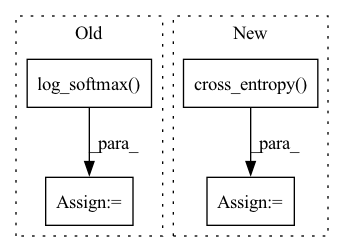

Pattern ID :32368
Before Change
elif self.hparams["loss_func"] == "cross_entropy_with_sync":
loss = F.cross_entropy(S_wisdom, y).sum() // (N, |W|), (N,) -> (N,) -> (1,)
S_wisdom_literal = torch.log_softmax(S_wisdom_literal, dim=1)
S_wisdom_figurative = torch.log_softmax( S_wisdom_figurative, dim=1)
// mse outperforms kl_div: https://arxiv.org/abs/2105.08919
// KD library gets use of MSE:
// https://github.com/SforAiDl/KD_Lib/blob/df4d9e5c0a494410cb2994e3a1d5902afdccf0d6/KD_Lib/KD/vision/vanilla/vanilla_kd.py//L69-L71
// you add this to the cross entropy lossAfter Change
elif self.hparams["loss_func"] == "cross_entropy_with_mtl":
loss = F.cross_entropy(S_wisdom, y).sum() // (N, |W|), (N,) -> (N,) -> (1,)
loss += F.cross_entropy(S_wisdom_literal, y).sum() // multi-task learning
loss += F.cross_entropy( S_wisdom_figurative, y) .sum() // multi-task learning
// S_wisdom_literal = torch.log_softmax(S_wisdom_literal, dim=1)
// S_wisdom_figurative = torch.log_softmax(S_wisdom_figurative, dim=1)
// // mse outperforms kl_div: https://arxiv.org/abs/2105.08919In pattern: SUPERPATTERN
Frequency: 3
Non-data size: 4
Instances Fragment ID: 94508882
Project Name: eubinecto/wisdomify
Commit Name: dd539ce1876eeeb8b6735eedd12061f3265ad698
Time: 2021-11-23
Author: eubinecto
File Name: wisdomify/models.py
M Class Name: RDGamma
N Class Name: RDGamma
M Method Name: training_step(3)
N Method Name: training_step(3)
M Parent Class: RD
N Parent Class: RD
M File Name: wisdomify/models.py
N File Name: wisdomify/models.py
M Start Line: 353
M End Line: 359
N Start Line: 352
N End Line: 354
Before Change
datas = datas.permute(1, 0) // len * b
data_embedding = self.word_embedding(datas) // len * b * e
output, _ = self.LSTM(data_embedding) // len * b * h
P = F.log_softmax( self.vocab_projection(output), dim = -1) // len * b * v
target_word_prob = torch.gather(P[ : -1], index = datas[1 : ].unsqueeze(-1), dim = -1).squeeze(-1) // len * b
losses = -target_word_prob.mean()
return losses
def generate(self):After Change
logits = logits.reshape(-1, self.vocabulary_size) // (len * b) * v
target = datas[1:].reshape(-1) // (len * b)
losses = F.cross_entropy( logits, target, ignore_index=self.pad_idx)
return losses
def generate(self, max_length):
self.eval() Fragment ID: 94508883
Project Name: rucaibox/textbox
Commit Name: 34940a486bff4b4b1f9bad5b47ac10d42e9ddc65
Time: 2020-11-16
Author: hglworking@163.com
File Name: textbox/module/Generator/SeqGAN_Generator.py
M Class Name: Generator
N Class Name: Generator
M Method Name: pre_train(2)
N Method Name: pre_train(2)
M Parent Class: nn.Module
N Parent Class: nn.Module
M File Name: textbox/module/Generator/SeqGAN_Generator.py
N File Name: textbox/module/Generator/SeqGAN_Generator.py
M Start Line: 22
M End Line: 28
N Start Line: 24
N End Line: 33
Before Change
input: [N, C]
target: [N, ]
logpt = F.log_softmax( input, dim=1)
pt = torch.exp(logpt)
logpt = (1-pt)**self.gamma * logpt
loss = F.nll_loss(logpt, target, self.weight,ignore_index=self.ignore_index)
return lossAfter Change
self.weight = weight
def forward(self, inputs: torch.Tensor, targets: torch.Tensor):
ce_loss = F.cross_entropy( inputs, targets, weight=self.weight, reduction="none")
p_t = torch.exp(-ce_loss)
loss = (1 - p_t)**self.gamma * ce_loss
if self.reduction == "mean":
loss = loss.mean()
elif self.reduction == "sum":
loss = loss.sum()
return loss Fragment ID: 94508880
Project Name: muqiujun-ai/bert4pytorch
Commit Name: 169a074a051648e0c9cb0af37363e917da7243dd
Time: 2022-03-22
Author: zh@3752154
File Name: bert4pytorch/losses.py
M Class Name: FocalLoss
N Class Name: FocalLoss
M Method Name: forward(3)
N Method Name: forward(3)
M Parent Class: nn.Module
N Parent Class: nn.Module
M File Name: bert4pytorch/losses.py
N File Name: bert4pytorch/losses.py
M Start Line: 14
M End Line: 22
N Start Line: 12
N End Line: 20